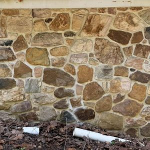
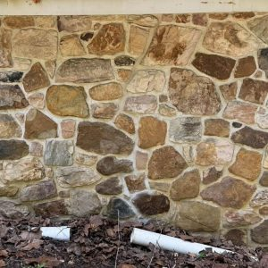

LET US FIX YOUR PROBLEM
Chimney & Masonry Services in Pottstown, PA & Nearby Areas

Certified Chimney Sweeping by Imperial Chimney & Masonry
Chimney Sweeping & Inspection
Starting at $189
Keep your home safe and your fireplace running efficiently with our professional chimney sweeping service. We remove creosote buildup, check for safety hazards, and make sure your system is drafting correctly before the burning season.
What's Included:
- Full chimney sweep
- Fireplace & flue inspection
- Removal of creosote and soot
- Safety check on accessible components
- Photo report of any issues found
Why It Matters:
Routine cleanings help prevent chimney fires, reduce odors, improve draft, and extend the life of your chimney system.
Recommended:
Annual cleaning for all active fireplaces and stoves.
Schedule a Sweep(PCR) Poultice Creosote Remover
We use a specialized product called Poultice Creosote Remover (PCR) to safely remove third-degree glazed creosote from your chimney. PCR is applied from the top of the chimney using a winch and an applicator sponge. We lower the sponge into the flue, coating the tiles with the product as it’s pulled downward.
Once applied, PCR breaks down, dissolves, and absorbs the hardened creosote as it dries. After the product has cured, the loosened creosote is removed with a standard chimney sweeping, restoring the flue to a much safer condition.
Schedule PCR Cleaning


Dryer Vent Cleaning
Lint buildup in dryer vents is a major fire hazard and can make your dryer run hotter, longer, and less efficiently. We clean out the vent line from end to end to help keep your home safe and your dryer running properly.
- Removal of lint and blockages in vent line
- Improved airflow and shorter dry times
- Helps reduce overheating and fire risk

Chimney Repairs
From crowns and caps to full chimney rebuilds, we repair masonry and structural issues that compromise both safety and appearance.
- Crown repairs and replacement
- Chimney rebuilds (partial and full)
- Flashing repairs to help keep water out
- Crack repairs and waterproofing

Chimney Crown Repair & Replacement
A damaged chimney crown allows water to penetrate your brick, mortar, and liner system. We repair cracked crowns, rebuild deteriorated concrete, and install new poured-in-place crowns that protect your chimney from future water damage.
- Crown resurfacing & crack repair
- Full crown replacement (poured-in-place concrete)
- Waterproof coatings
- Preventing future flue tile damage & leaks

Finished Crown — Sealed & Protected
After repairs, your crown is sealed to shed water and protect the flue and masonry below.
Chimney Cap Installation & Replacement
A proper chimney cap keeps rain, animals, and debris out of your chimney while helping reduce downdrafts and moisture damage. We install stainless steel caps sized correctly for your flue.
- New stainless steel chimney caps
- Replacement of rusted or missing caps
- Bird, animal, and rain protection


Chimney Leak Diagnostics & Repairs
Brown ceiling stains, dampness near the fireplace, or water in the firebox usually point to chimney leaks. We track down where the water is getting in and recommend the correct repair instead of guesswork.
- Leak tracking at crown, cap, brick, or flashing
- Targeted masonry repairs to stop water intrusion
- Sealants and waterproofing where appropriate
Chimney Flashing Repair & Replacement
The metal flashing where your chimney meets the roof is a common source of leaks. We repair or replace damaged flashing and seal the transitions to help keep water out of your attic, ceilings, and walls.
- Inspection of existing step and counter flashing
- New flashing installation where needed
- Resealing and leak prevention at the roofline


Masonry & Chimney Waterproofing
Brick and mortar are porous and absorb water over time. Freeze–thaw cycles and constant moisture can cause cracking, spalling, and leaks. We apply breathable masonry sealers to protect your chimney and masonry without trapping moisture inside.
- Breathable water-repellent coatings for masonry
- Protection against freeze–thaw damage
- Helps extend the life of brick and mortar joints
Liner Installation — Step by Step

Step 1 – Liner fed down chimney

Step 2 – Tee & wall thimble connection

Step 3 – Top plate & cap installed
Chimney Re-Lining & Flue Restoration
A damaged or unlined chimney flue can lead to poor draft, smoke in the home, and potential fire hazards. We install stainless steel liners and apply flue restoration systems when appropriate to bring older chimneys back to safe working condition.
Ideal For:
- Cracked or missing clay flue tiles
- Unlined or oversized chimney flues
- Connecting new appliances or inserts
We'll inspect your chimney, review your options, and recommend the safest long-term solution for your home and appliance.
Ask About Re-Lining
Fireplace Ceramic Resurfacing (FireGuard)
If your terracotta flue tiles have missing mortar joints, cracks, gaps, or surface deterioration, ceramic resurfacing is a strong, long-lasting repair option. Our FireGuard system creates a new, smooth, insulated ceramic coating inside your existing flue that can withstand temperatures up to 3,205°F.
This process seals gaps, restores structural integrity, improves draft, and is typically a more affordable alternative to a full stainless steel liner. It’s one of the best solutions for aging or damaged fireplace flues.
Schedule FireGuard Resurfacing Click to Learn More About FireGuard
Masonry Repairs & Restoration
From chimneys to foundations, we repair brick, block, and stone that has been damaged by age, weather, or previous patchwork. Our goal is to blend repairs with the existing masonry while restoring strength and keeping water out.
- Chimney and wall rebuilds (partial or full)
- Repairing loose or missing bricks and stones
- Waterproofing and protective coatings
 

Damaged Foundation Wall Repair — Before & After
This section had loose stone, missing mortar, and water-damaged foam mortar joints. We removed all loose material, rebuilt the stone bed, applied new base mortar, and finished with a waterproof stucco coating for a clean, durable repair.
Get an EstimateProfessional Masonry Repairs & Restoration
Imperial Chimney & Masonry provides professional brick and stone repair for homes experiencing cracking, settling, water damage, or deterioration. Whether it’s a foundation issue, loose bricks, or damaged mortar joints, we can diagnose the problem and restore your masonry safely and correctly.
If you have concerns about your brickwork or notice cracking around windows, chimneys, or foundations, we’d be happy to inspect it and provide expert guidance.
Get an Estimate
Brick & Stone Repointing
Deteriorated mortar joints allow water into your brick or stone work and can eventually lead to loose units and structural problems. We grind out failing joints and pack new mortar that matches the original as closely as possible.
- Grind-out and clean preparation of failing joints
- Fresh mortar packed and tooled for a clean finish
- Focused repairs on chimneys, walls, and foundations
Brick & Stone Repointing — Before & After


Pressure Washing & Exterior Cleaning
We clean masonry, patios, walkways, and other hard surfaces to remove dirt, algae, and staining. Our approach is to be effective without causing damage to the surfaces being washed.
- Stone, brick, and concrete cleaning
- Patios, walkways, stoops, and retaining walls
- Prep cleaning before repairs or waterproofing
Recent Pressure Washing Results


Fireplace Repairs & Refresh
If your firebox, smoke chamber, or hearth is cracked, stained, or falling apart, we can repair or rebuild those interior components. We also address issues with prefab panels and gas fireplace cosmetics.
- Firebox and smoke chamber repairs
- Replacement of damaged prefab refractory panels
- Minor cosmetic updates and sealing
Pilot Assembly Repairs & Replacement
If your gas fireplace pilot will not stay lit, won’t ignite, or keeps shutting off, the pilot assembly may be worn, clogged, or failing. We diagnose ignition issues and install brand-new assemblies to restore safe and reliable operation.
- Diagnosis of pilot & ignition failures
- Replacement of thermocouples & thermopiles
- Full pilot assembly installation
- Cleaning of burner ports and pilot orifice


Gas Log & Gas Fireplace Cleaning & Tune-Ups
If your gas logs look dirty, burn unevenly, or don't quite feel right, a full cleaning and tune-up can make a big difference. We service the entire log set so it burns cleaner, looks better, and operates safely.
We typically handle:
- Correcting log placement for proper flame pattern
- Cleaning burner tray, logs, and ember bed
- Wiping soot from doors and glass for a clear view
- Checking gas valve, pilot, igniter, and safety controls
- Refreshing embers for a brighter, more natural flame
Smoke, Odor & Draft Issue Diagnostics
If your fireplace smokes, smells, or doesn’t seem to draft correctly, there is usually an underlying cause — flue sizing, blockages, negative pressure in the home, or wind-related issues. We diagnose the problem and outline practical repair options.
- Investigation of smoke roll-back and poor draft
- Checking for blockages, damper problems, or flue sizing issues
- Recommendations to improve performance and reduce odors